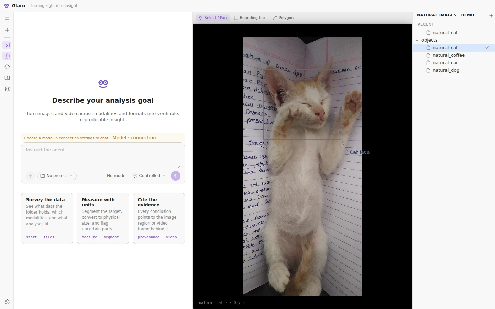
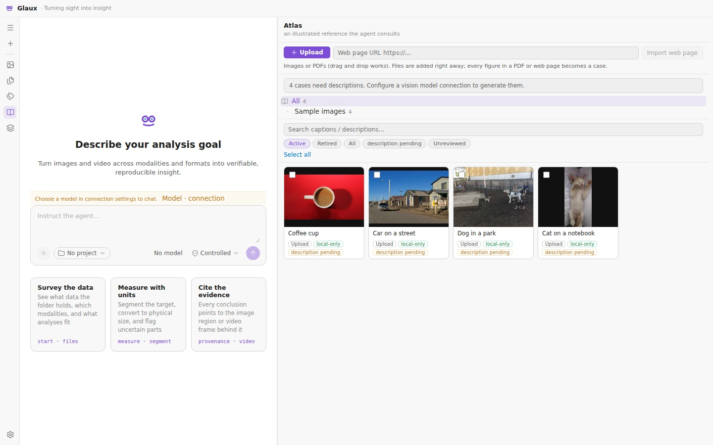
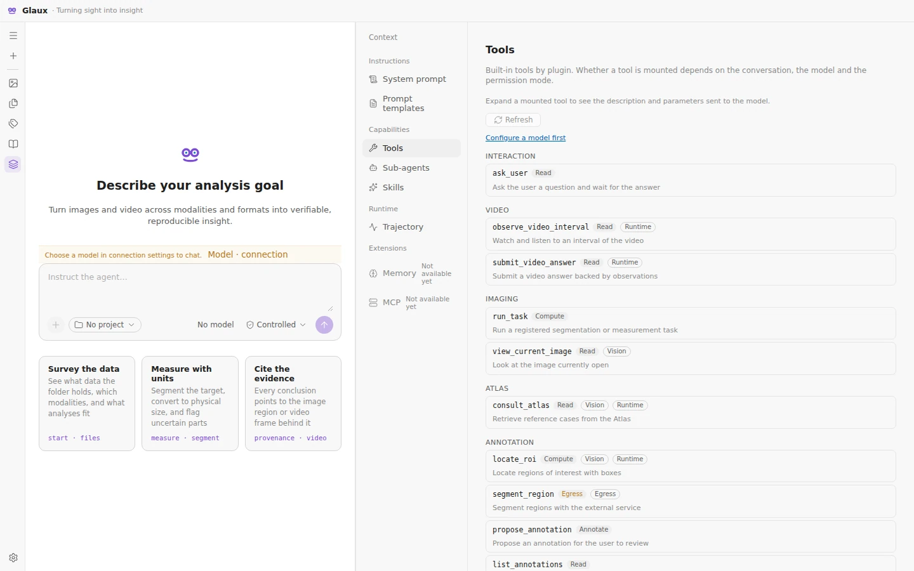

Inspect images and video
Open local files, move through frames, and give a model visual context. Video questions can include time-aligned frame and audio evidence.
Glaux gives your AI model a workspace to inspect images and video, use analysis tools, and show the evidence behind each result.
Runs on your computer · Bring your own model · Apache-2.0

Use a single local environment to bring together the source image or video, the tools that act on it, and the record of how a result was produced.
Open local files, move through frames, and give a model visual context. Video questions can include time-aligned frame and audio evidence.
Draw and edit image annotations. Agent suggestions stay reviewable, with their source region available beside the result.

Collect images and references with descriptions and regions so the agent can consult curated examples during later work.

Inspect available tools, skills, and subagents. Review request context, model calls, and tool activity turn by turn.
On Windows, download the graphical installer. On macOS and Linux, copy one command. The installer checks the downloaded package, prepares its own runtimes, and opens Glaux in your browser.
Need another version or an offline setup? The install guide lists supported systems and options.
Open the downloaded EXE and choose your folders. Use the Glaux desktop icon to start, open or stop the app.
curl -fsSL https://zhentai-sn.github.io/open-glaux/install.sh | shGlaux runs the interface and analysis services locally. You choose the model provider and which prompts or media to send to it.
Models reason. Glaux supplies the environment around that reasoning.
Read media with its modality, scale, channels, frames and timing.
Use tools for annotation, segmentation, measurement and more.
Trace results to source regions and review them against other methods.
Keep the steps, corrections and examples that can help later work.
No. The installer places the Node.js, uv and Python runtimes Glaux needs inside its program directory. It does not require administrator access.
No. Connect a model provider you choose. Provider pricing and terms depend on that service. Specialized model weights are installed separately when needed.
By default, in ~/.glaux on macOS and Linux, or %USERPROFILE%\.glaux on Windows. Updating or uninstalling keeps this directory unless you explicitly choose to purge it.
On Windows, use the Uninstall button in the Glaux desktop control window, or run glaux uninstall to remove the program and keep your data. Run glaux uninstall --purge to remove both.
No. Biomedical features are for research use and are not intended for clinical diagnosis.